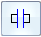
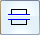
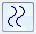
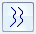
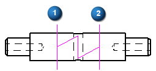
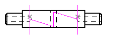
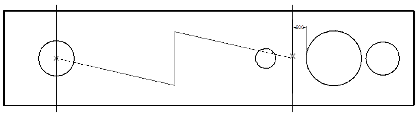

Create a broken view
This procedure explains how to use the Broken View command to break an orthographic drawing view along the X or Y axis.

You also can break an isometric view with a user-defined axis. To learn how to do this, see Break an isometric view with a break axis.
-
On the drawing sheet, click a drawing view, and then select the Drawing Views group→Broken View command.
The command is also located on the shortcut menu of a selected drawing view.
A line is displayed on the drawing view and moves with the cursor across the drawing view envelope.
-
On the command bar, do the following:
-
From the Break Line Orientation list, select Horizontal/Vertical.
-
Specify break direction by selecting one of these buttons:

Vertical Break-
Define a break region using vertical lines.

Horizontal Break-
Define a break region using horizontal lines.
-
Click the Break Line Type button, and then select the appearance of the broken edge to show in the drawing view.
-
Straight Break
-

Cylindrical Break -

Short Break - Linear -
Short Break - Curved
-
Long Break
-
-
Click two points to define the start location and the end location of the portion of the drawing view that you do not want to display. Use either of the following methods:
-
To define a region that is not associative to the part view—Click anywhere in the drawing view to define the start of the broken region (1). Click again to define the end of the broken region (2).
Example:Break lines that do not update with changes to the part view.

-
To define a region that updates when the part view updates—Locate keypoints using the mouse, or press shortcut keys to snap to specific keypoints.
To snap to this keypoint
Press this key
Midpoint
M
Intersection point
I
Center point
C
Endpoint
E
Example:Break lines associated with keypoints.

The region to be removed is now defined.
-
-
-
(Optional) Repeat the previous steps to define additional regions.
You can define both horizontal and vertical breaks on the same drawing view.

-
On the command bar, click Finish to update the drawing view.
-
You also can constrain the break line at a distance from geometry, for example, 0.5 inches from the edge of a hole. To learn how to do this, see Connect a break line at a distance.

-
You can use the Break Gap, Height, and Pitch options on the Broken View command bar to change the appearance of the broken edges when the drawing view is displayed in the broken state.
-
You can use the Undo and Redo commands to make adjustments to the appearance of break lines.
-
To remove the broken view, select the break line pair and press Delete.
-
Add dimensions and apply annotations after the broken view is displayed.
-
To modify a broken view, you have to edit the break lines used to create it. For more information, see Modify break lines in a broken view.
How do I
Create a broken-out section viewModify a broken-out section view
Break an isometric view with a break axis
Connect a break line at a distance
Display break lines and cropped edges in a broken view
Modify break lines in a broken view
Copy break lines between drawing views
Remove inherited break lines
Learn more
Broken viewsLook up more details
Broken-Out commandBroken View command
Broken View command bar
Inherit Break Lines command
Remove Break Line Inheritance command